User Research
Through my initial user research I focused primarily on the content and information strategy that I wanted to apply inside of my website project. I sought out people who had previously been involved in service businesses or ecommerce products because I am developing a website for a service company rather than my personal portfolio.
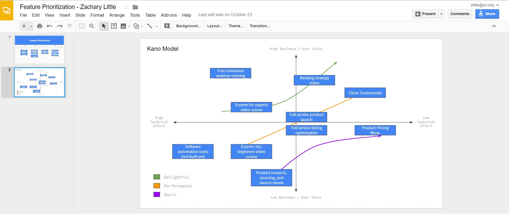
I had never put together a Kano Diagram previously and I feel like this visualization added a lot of value to my strategy for developing my website. It was very easy for me to look at this and at a glance pull out the features that I should be prioritizing.
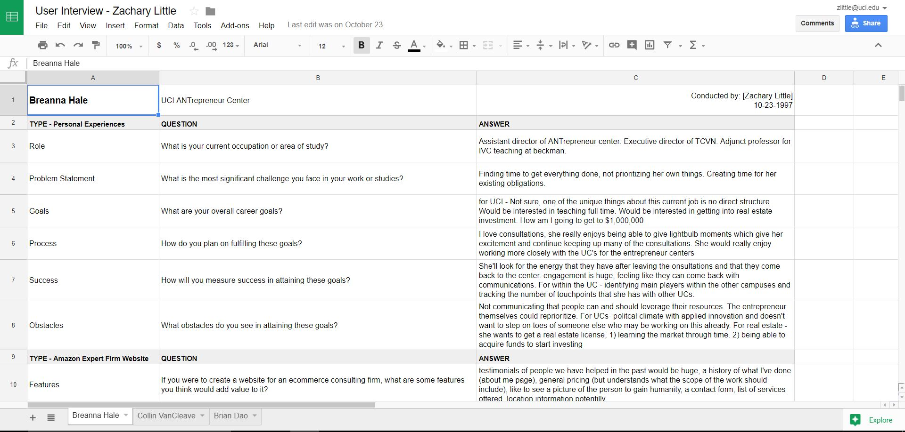
My first interview was with a woman who is in the early stages of building an ecommerce physical products company. I met with her specifically to ask questions that focus on the consumer aspect of my website and what information she would want to see before becoming interested in buying services from me or talking further.
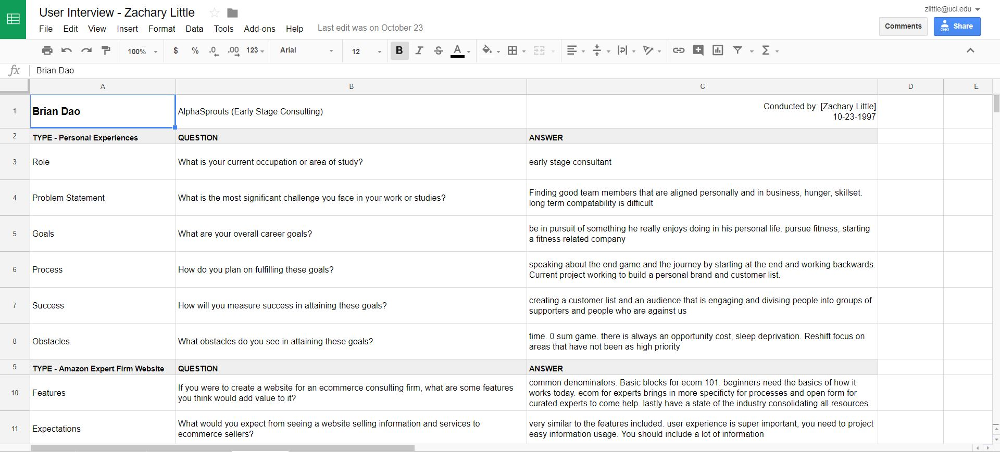
My second interview was with a man who has run several consulting companies in the past including in the technology services and early stage company markets. I focused my questions around the tactical aspect of how I should present my services and brainstorming the work that I can do for my clients.
User Testing
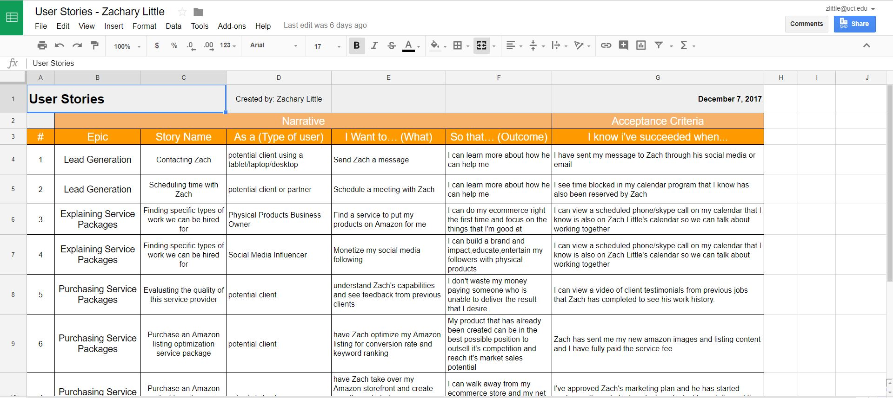
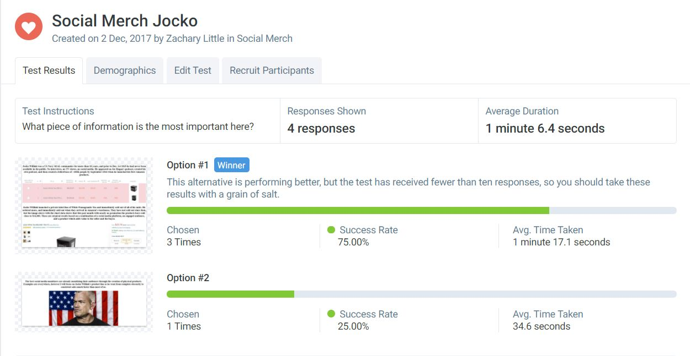
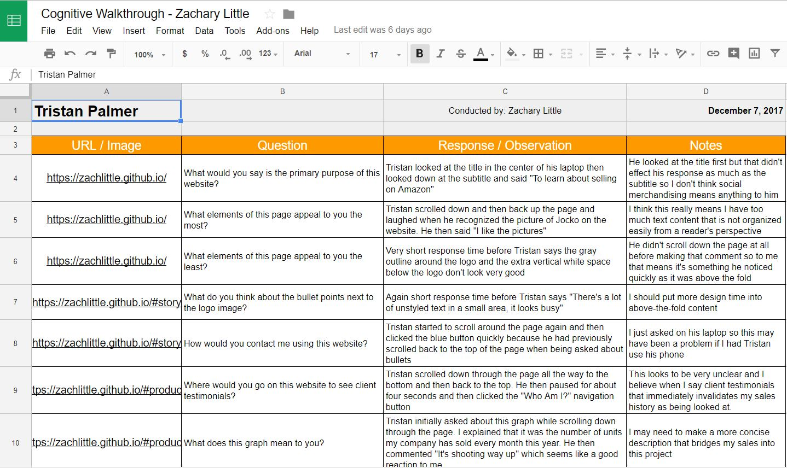
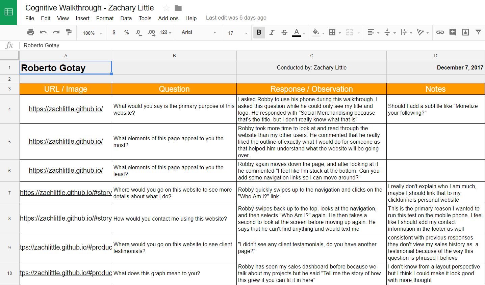
Summary Of Findings
While developing the first version of my website I focused primarily on my content, however I really did not put much design aesthetic into my project. This was the biggest comment I recieved through my cognitive walkthroughs. The particular feedback I recieved which helps me think about my project moving forward revolved around the two-column image and list element above the fold; most people I talked to said that the borders and gray space did not look clean and the text bullets seemed to be very text dense and this was not what my users desired as the first thing they saw.
The second major piece of feedback I recieved is that my website looks like one page with no interruptions, and that I should ease the cognitive load on my users by creating visual breaks between my different sections. The all-white background in addition to my consistent text captions and images makes the page simply blend together into one run on section rather than providing specific information to the user and direction their decision making flow.
Overall I believe my content is strong, however the way I present this content needs to be augmented with smart design queues that serve to dictate the attention of my users. If I am able to invest time in producing additional content for this website I will obtain headshots and testimonials of the people I have consulted with up to this point so that I can show my services are backed by social proof and that I am a reliable service provider for current and prospective Amazon Sellers.
Incorporation Of Findings
The first change that I have made as a result of my findings is cleaning up my initial landing page by removing extra content around the logo. I had a gray background which took away from the overall website design rather than adding to it, and the black borders were not preserved in other sections and as such they seem out of place. After removing the black borders and gray background from all media query breakpoints I believe that the overall website design is significantly cleaner and this will provide a strong foundation for future changes. In the same section I added styling to my navigation bar so that the page sections would not appear as simple hyperlinks but would instead match the color of the logo and create a uniform color scheme.
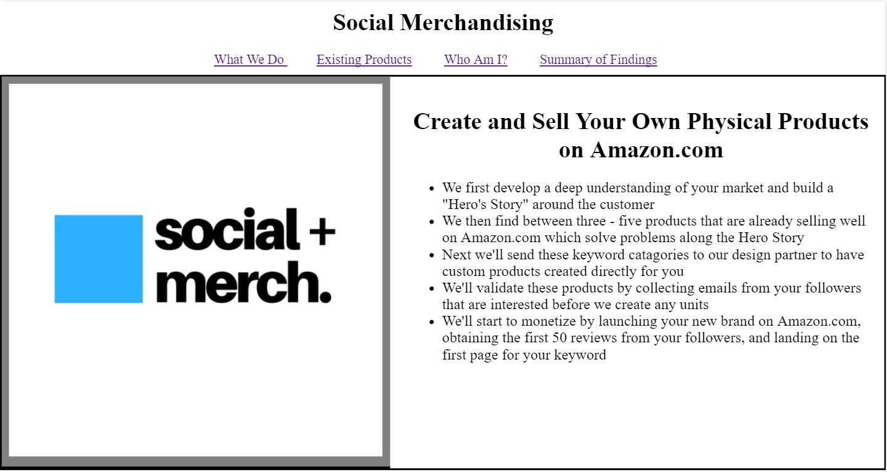
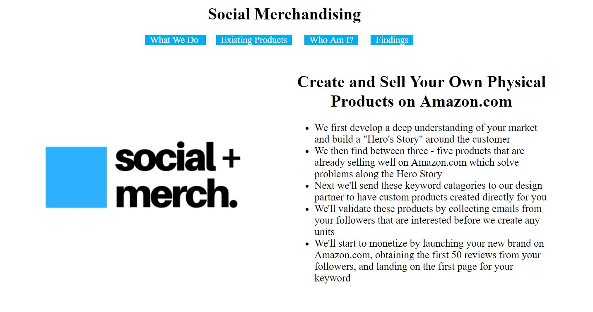
These images show the first iteration of my design changes for my primary webpage. I am currently working to expand the blue sections to cover the full horizontal width of the page rather than stopping at the predefined margins that are created earlier in my cascading style sheet. My current plan is to transition all of my non-semantic html and css into section tags and to create white space with margin on the sections rather than the body. I will have to sketch exactly how I will implement this before I actually start shifting code though.
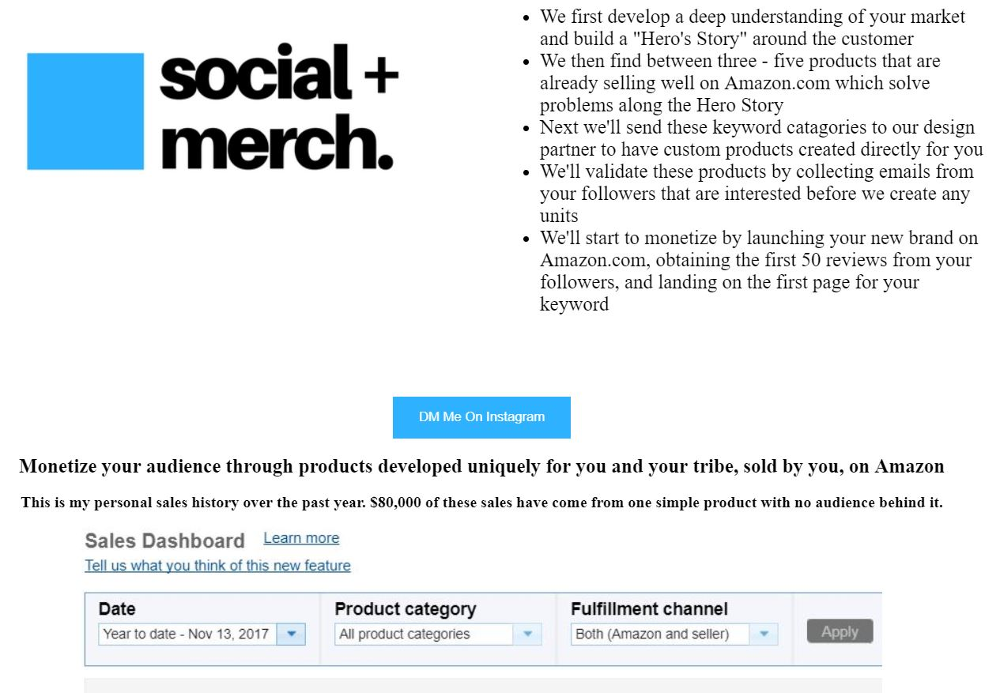
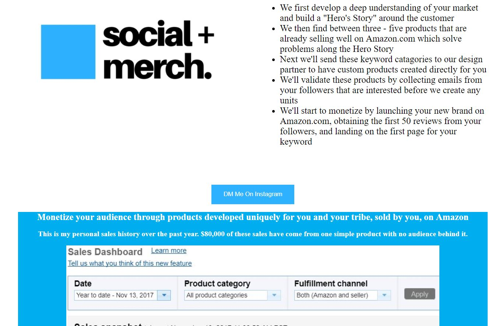